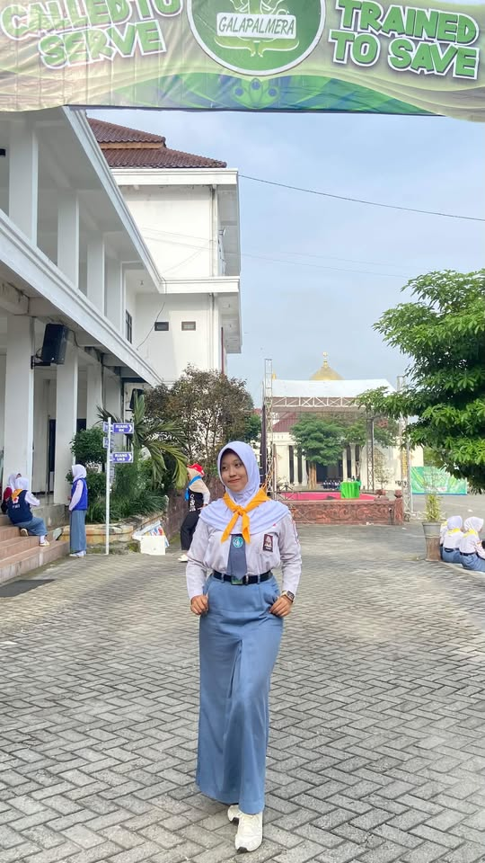

Peer Educator PMR

PMR (Palang Merah Remaja) mengajarkan saya arti kepedulian, empati, dan pelayanan kepada sesama. Pengalaman ini membentuk saya menjadi pribadi yang lebih peka terhadap kebutuhan orang lain.
Peran sebagai Peer Educator
Sebagai Peer Educator, saya bertugas memberikan edukasi kesehatan kepada teman sebaya. Ini bukan sekadar mengajar, tapi juga menjadi teladan dalam menerapkan hidup sehat dan peduli sesama.
Lomba GALAPALMERA
🏆 Lomba Tingkat Se-Jawa Terbuka
Saya berkesempatan mewakili sekolah dalam lomba GALAPALMERA (Galang Palang Merah Remaja) bidang Kesehatan Remaja tingkat se-Jawa Terbuka. Lomba ini menguji kemampuan saya dalam pertolongan pertama, kesehatan remaja, dan kerja sama tim.
Dokumentasi

Kegiatan Rutin
- Pertolongan pertama pada luka ringan
- Edukasi kesehatan remaja di sekolah
- Latihan rutin materi PMR
- Bakti sosial & donor darah
Pelajaran Berharga
- Empati — Memahami dan peduli terhadap orang lain
- Public speaking — Menyampaikan materi ke teman sebaya
- Kerja sama tim — Berkolaborasi dalam lomba & kegiatan
- Kesiapsiagaan — Cepat tanggap dalam situasi darurat
Kesimpulan
PMR mengajarkan saya bahwa ilmu yang bermanfaat adalah ilmu yang dibagikan. Menjadi Peer Educator adalah cara saya berkontribusi untuk menciptakan lingkungan sekolah yang lebih sehat dan peduli.